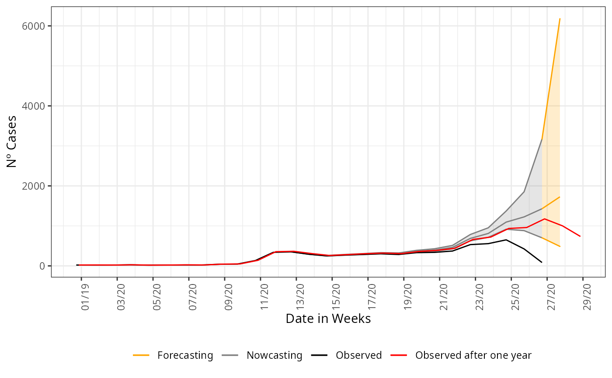
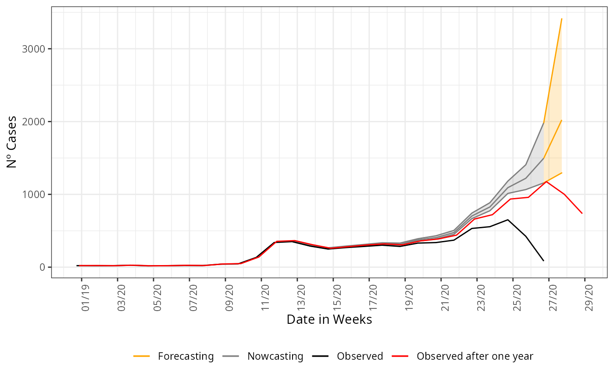

Forecasting
Rafael Lopes & Leonardo Bastos
Source:vignettes/articles/forecasting.Rmd
forecasting.RmdForecasting
Nowcasting is the estimation of the events that are already started but not yet reported. In epidemiology, the events as like cases that has onset its first symptoms but are not yet captured from the notification system. Forecasting is simply the estimation of the events, that are not yet too started its onset of first symptoms, i.e. cases that are in a probable incubation period. From the data structure that any databases has is basically the cases that has a date of onset greater than present date. In the language of delay triangle, forecasting will be only to estimate the part that is completely unobserved.
Parameter K > 0
The nowcasting_inla function has a functional parameter
that flags to the model parsed to inla to construct the
delay triangle with dates greater than the present date. This is done by
the setting the K parameter to a value greater than 0, like
$K = 1,2,3, $. We proceed as in any other example of nowcasting. We will
forecasting as was done for nowcasting in the article Nowcasting
for decision making.
First, we cut the lazydata loaded with the namespace of the package
to a date of interest, more details on why we cut on this date see the
article Nowcasting
for decision making. And after this we parse to the
nowcasting_inla function the date of onset and date of
report columns, a flag for returning a data.frame with the cases counts
by week and setting the K parameter to a desired
forecasting horizon, here we forecast one week ahead of the present
date.
Before forecasting, we construct the case counts curve from the
lazydata, by using the internal function data.w_no_age, we
construct the curve by summarizing the case counts by each date of onset
of first symptoms present at the database.
library(tidyverse)
library(lubridate)
library(nowcaster)
## To see Nowcasting as if we were on the verge of rise in the curve
data("sragBH")
srag_now<-sragBH |>
filter(DT_DIGITA <= "2020-07-04")
data_by_week<-data.w_no_age(dataset = srag_now,
date_onset = DT_SIN_PRI,
date_report = DT_DIGITA,
K = 0) |>
group_by(date_onset) |>
tally()
data_by_week |>
ggplot(aes(x = date_onset,
y = n))+
geom_line()+
theme_bw()+
labs(x = 'Date of onset of symptons',
y = 'Nº Cases')+
scale_color_manual(values = c('grey50', 'black'),
name = '')+
scale_x_date(date_breaks = '2 weeks',
date_labels = '%V/%y',
name = 'Date in Weeks')
Now, to forecast one week ahead we just flag the K = 1,
and proceed as in normal nowcasting calling, the code is:
nowcasting_bh_no_age <- nowcasting_inla(dataset = srag_now,
date_onset = DT_SIN_PRI,
date_report = DT_DIGITA,
data.by.week = T,
K = 1)
head(nowcasting_bh_no_age$data)
#> # A tibble: 6 × 3
#> date_report date_onset Delay
#> <date> <date> <dbl>
#> 1 2020-02-29 2020-02-08 3
#> 2 2020-02-01 2020-01-18 2
#> 3 2020-04-11 2020-03-28 2
#> 4 2020-03-28 2020-03-21 1
#> 5 2020-04-11 2020-03-14 4
#> 6 2020-04-18 2020-04-04 2To visualize the forecast we plot the observed curve and the nowcasting and forecasting estimate, change the colors for each part. We plot together the nowcasting and forecasting estimate, the curve observed one year later, to validate the estimate done.
## Nowcasting estimate filtering
nowcasting_estimate<-nowcasting_bh_no_age$total |>
filter(dt_event <= "2020-06-27")
## Forecasting estimate filtering
forecasting_estimate<-nowcasting_bh_no_age$total |>
filter(dt_event >= "2020-06-27")
## One year after observed
data_one_year_after<-sragBH %>%
filter(DT_SIN_PRI <= "2020-07-16") %>%
mutate(
D_SIN_PRI_2 = DT_SIN_PRI - as.numeric(format(DT_SIN_PRI, "%w"))
) %>%
group_by(D_SIN_PRI_2) %>%
tally()
## Plotting
nowcasting_estimate |>
ggplot(aes(x = dt_event, y = Median, col = "Nowcasting"))+
geom_line()+
geom_ribbon(aes(ymin = LI, ymax = LS, col = "Nowcasting", fill = "Nowcasting"),
alpha = 0.2,
show.legend = F)+
geom_line(data = forecasting_estimate,
aes(x = dt_event, y = Median, col = "Forecasting"))+
geom_ribbon(data = forecasting_estimate,
aes(ymin = LI, ymax = LS, col = "Forecasting", fill = "Forecasting"),
alpha = 0.2,
show.legend = F)+
geom_line(data = data_by_week,
aes(date_onset, y = n, col = 'Observed'))+
geom_line(data = data_one_year_after,
mapping = aes(x = D_SIN_PRI_2, y = n,
color = "Observed after one year")) +
theme_bw() +
theme(legend.position = "bottom",
axis.text.x = element_text(angle = 90)) +
scale_color_manual(values = c('orange','grey50', 'black', 'red'),
name = '')+
scale_fill_manual(values = c('orange','grey50'),
name = '')+
scale_x_date(date_breaks = '2 weeks',
date_labels = '%V/%y',
name = 'Date in Weeks')+
labs(x = '',
y = 'Nº Cases')
Uncertainty growth
As we try to forecasting longer ahead of the present date, the uncertaintiy has to grow. This is saw by the opening of the confidence intervals on the last graph. Although it is wide the realized curve still falls inside it, indicating that is assertative on the tendencey of the curve at least. This can be taken to support decision making when planning ahead of the present date. To any other forecasting horizon futher than 1 week ahead, the confidence interval will be wider than this, to help a little we can try a forecasting with an imposed structured on the data. Now, we forecasting parsing the columns for age to the nowcasting function, this can reduce the openning of the confidence interval.
nowcasting_bh_age <- nowcasting_inla(dataset = srag_now,
date_onset = DT_SIN_PRI,
date_report = DT_DIGITA,
data.by.week = T,
K = 1,
age_col = Idade)
head(nowcasting_bh_age$data)
#> # A tibble: 6 × 5
#> date_report date_onset age_col Delay fx_etaria
#> <date> <date> <dbl> <dbl> <fct>
#> 1 2020-02-29 2020-02-08 59 3 7
#> 2 2020-02-01 2020-01-18 79 2 9
#> 3 2020-04-11 2020-03-28 72 2 9
#> 4 2020-03-28 2020-03-21 82 1 10
#> 5 2020-04-11 2020-03-14 50 4 7
#> 6 2020-04-18 2020-04-04 74 2 9And we plot the nowcasting estimate and forecasting estimate again:
## Nowcasting estimate filtering
nowcasting_estimate<-nowcasting_bh_age$total |>
filter(dt_event <= "2020-06-27")
## Forecasting estimate filtering
forecasting_estimate<-nowcasting_bh_age$total |>
filter(dt_event >= "2020-06-27")
## Plotting
nowcasting_estimate |>
ggplot(aes(x = dt_event, y = Median, col = "Nowcasting"))+
geom_line()+
geom_ribbon(aes(ymin = LI, ymax = LS, col = "Nowcasting", fill = "Nowcasting"),
alpha = 0.2,
show.legend = F)+
geom_line(data = forecasting_estimate,
aes(x = dt_event, y = Median, col = "Forecasting"))+
geom_ribbon(data = forecasting_estimate,
aes(ymin = LI, ymax = LS, col = "Forecasting", fill = "Forecasting"),
alpha = 0.2,
show.legend = F)+
geom_line(data = data_by_week,
aes(date_onset, y = n, col = 'Observed'))+
geom_line(data = data_one_year_after,
mapping = aes(x = D_SIN_PRI_2, y = n,
color = "Observed after one year")) +
theme_bw() +
theme(legend.position = "bottom",
axis.text.x = element_text(angle = 90)) +
scale_color_manual(values = c('orange','grey50', 'black', 'red'),
name = '')+
scale_fill_manual(values = c('orange','grey50'),
name = '')+
scale_x_date(date_breaks = '2 weeks',
date_labels = '%V/%y',
name = 'Date in Weeks')+
labs(x = '',
y = 'Nº Cases')